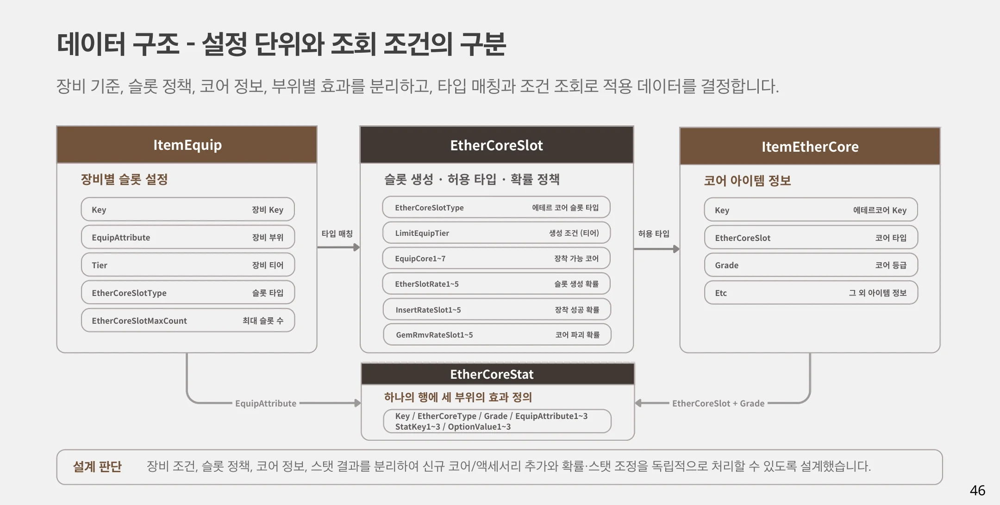
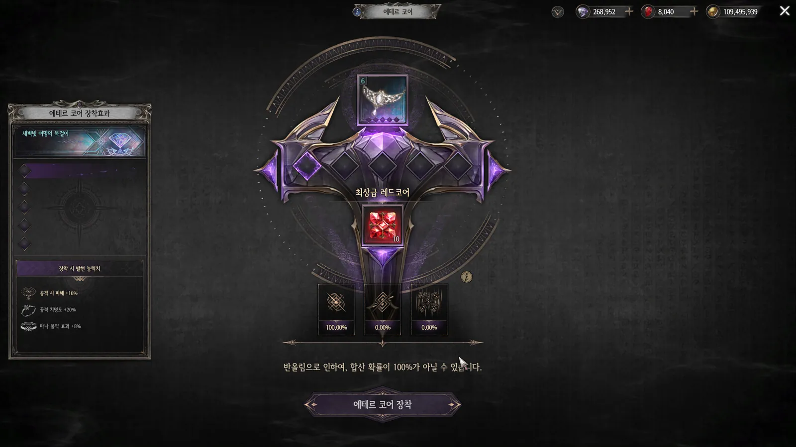
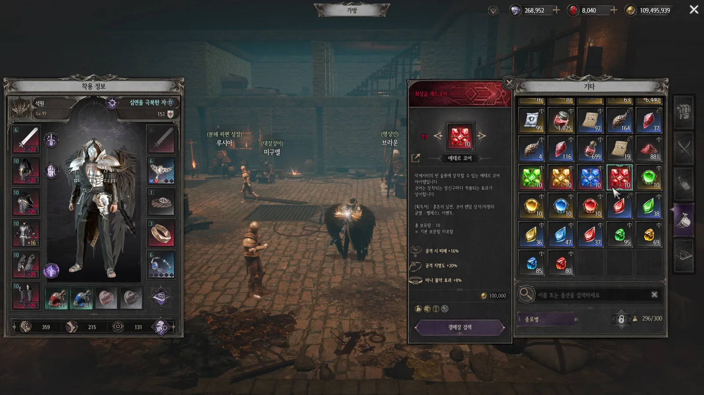
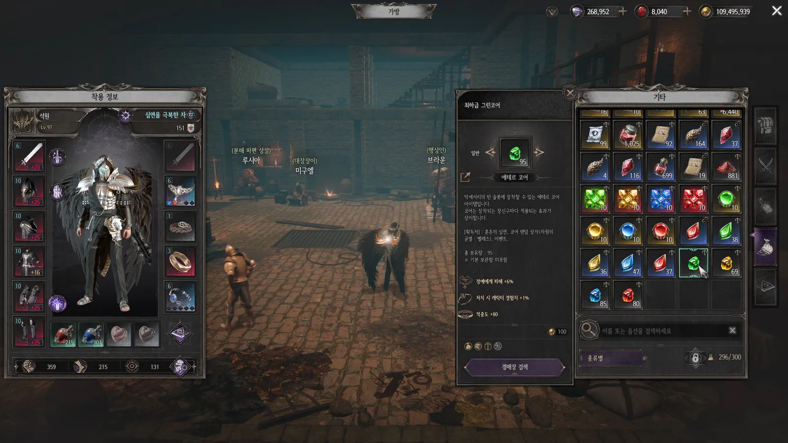
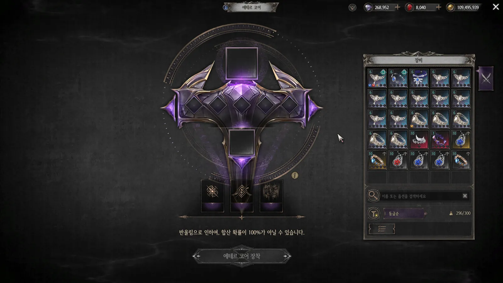
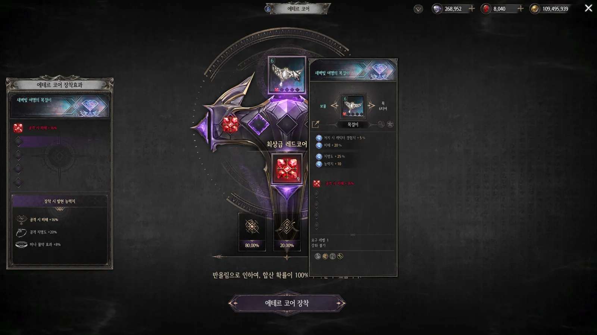
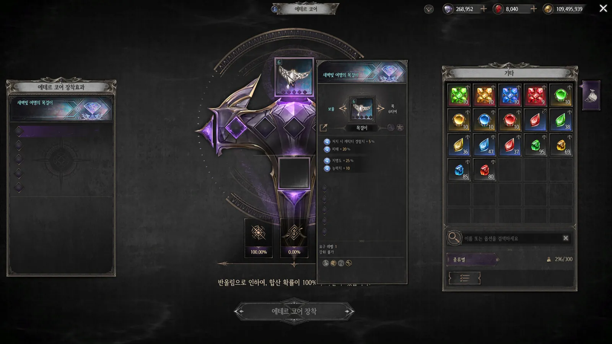

에테르 코어
액세서리의 슬롯에 에테르 코어를 장착해 부위별 효과와 추가 성장을 제공하는 시스템 — 획득과 장착, 두 단계의 성장
같은 장비에도, 다른 가치를
장비 획득 시 정해지는 슬롯 수와, 순서대로 채워 가는 코어 장착을 서로 다른 성장 단계로 나눴습니다. 뒤 슬롯일수록 기존 코어를 잃을 위험을 더해 도전의 무게를 조절했습니다.
다양성과 희소성
슬롯 수가 랜덤으로 생성되어 같은 장비라도 가치가 달라지고, 거래·경매장의 밸류 체인이 생깁니다.
고위험 고보상
단순 강화와 다른 긴장감 — 장착 실패 시 기존 코어가 파괴될 수 있습니다.
빌드 다양화
코어 색과 장착 부위의 조합으로 자신만의 스탯 세팅을 구성합니다.
획득과 장착, 두 단계
획득 시 정해지는 슬롯 수는 성장 여지를 만들고, 코어 장착은 그 여지를 채워 가는 과정입니다.
장비 획득 — 성장 여지 결정
목걸이·반지·벨트에 장비 조건과 슬롯 정책을 적용합니다. 생성된 슬롯 수가 이후 장착 가능한 코어 수의 상한이 됩니다.
코어 장착 — 효과 누적
왼쪽 첫 슬롯부터 순서대로 장착합니다. 슬롯을 건너뛰거나 장착 순서를 바꿀 수 없습니다.
| 장비 조건 | 1개 | 2개 | 3개 | 4개 | 5개 |
|---|---|---|---|---|---|
| 6티어 이상 | 31% | 31% | 22% | 11% | 5% |
현재 슬롯 정책 예시 — EtherCoreSlotKey 11001
ItemEquip에는 장착 가능한 코어 슬롯 타입과 최대 슬롯 수를, EtherCoreSlot에는 슬롯 타입별 장착 가능 코어와 슬롯 생성 확률을 둡니다. 같은 정책을 여러 장비에 적용하고, 정책 변경과 개별 장비 설정을 나누어 관리합니다.
하나의 코어를 세 부위에 활용
코어를 부위별 별도 아이템으로 나누지 않고, 장착 부위에 해당하는 효과 하나를 적용하도록 구성했습니다. 코어 타입·등급으로 효과 행을 조회하고, 장비 부위와 일치하는 EquipAttribute의 옵션만 적용합니다.
| 희귀 코어 예시 | 목걸이 · Amulet | 반지 · Ring | 벨트 · Belt |
|---|---|---|---|
| ◆ 레드 코어 | 공격 시 피해 +12% | 공격 치명도 +15% | 마나 물약 효과 +6% |
| ◆ 블루 코어 | 주문 시 피해 +12% | 주문 치명도 +15% | 생명력 물약 효과 +6% |
| ◆ 옐로우 코어 | 치명타 피해 +12% | 골드 획득량 +3% | 능력치 +6 |
| ◆ 그린 코어 | 정예에게 피해 +18% | 처치 경험치 +3% | 적중도 +240 |
아이템 종류와 학습 부담
4색 × 4등급의 코어를 공통으로 활용해, 부위별 아이템 종류가 늘어나는 것을 방지했습니다.
고정 수치와 중첩 보관
동일 코어의 수치를 고정하고 중첩 보관하도록 설계해, 다량 획득 시 인벤토리 부담을 완화했습니다.
실패와 기존 코어 파괴를 분리
실패하면 시도한 코어가 소멸하며, 별도 파괴 판정에 따라 기존 코어 일부 또는 전부가 제거될 수 있습니다. 초반에는 파괴 없이 성장을 시작하고, 후반에는 누적한 코어를 잃을 위험까지 고려하도록 구성했습니다.
| 장착 순번 | 성공 | 일반 실패 | 기존 코어 파괴 |
|---|---|---|---|
| 1번째 | 100% | 0% | 0% |
| 2번째 | 80% | 20% | 0% |
| 3번째 | 50% | 35% | 15% |
| 4번째 | 30% | 42% | 28% |
| 5번째 | 20% | 40% | 40% |
- 장착 성공 — 시도한 코어가 다음 슬롯에 장착되고 효과 적용
- 장착 실패 → 파괴 여부 판정 — 시도한 코어 소멸 →
GemRmvRateSlot판정. 일반 실패면 기존 코어 유지 - 파괴 수량 결정 → 장착 역순 제거 — 기존 코어가 4개라면 1·2·3·4개 파괴가 각각 25%. 결정된 수량만큼 마지막에 장착한 코어부터 제거 (예: 2개 파괴 → 4번·3번)
- 확률의 기준을 구분 — 5번째 실패 확률 80% × 실패 후 파괴 확률 50% = 한 번의 시도에서 기존 코어 파괴 발생 확률 40%
설정 단위와 조회 조건의 구분
장비 조건, 슬롯 정책, 코어 정보, 스탯 결과를 분리해 신규 코어·액세서리 추가와 확률·스탯 조정을 독립적으로 처리할 수 있도록 설계했습니다.

효과와 위험을 확인한 뒤 실행
대상 장비, 부위별 코어 효과, 결과 확률을 한 화면에서 확인하고 장착으로 이어지도록 구성했습니다.

- ① 대상 장비와 슬롯 — 장비와 현재 슬롯 상태 확인
- ② 장착할 코어 — 타입·등급·보유 수량 확인. 코어 등록 시 인벤토리를 자동으로 숨겨 장착 정보에 집중
- ③ 부위별 발현 효과 — 세 부위의 효과를 함께 안내하고 현재 장비에 적용될 효과 강조
- ④ 결과 확률 — 성공·일반 실패·파괴를 구분해 시도 위험 안내
- ⑤ 장착 실행 — 파괴 위험이 있는 단계에서는 기존 코어 일부 또는 전부가 파괴될 수 있음을 팝업으로 안내





포트폴리오 원본 슬라이드
PDF 포트폴리오 42~47쪽 전체입니다. 클릭하면 전체 화면으로 보고 ← → 키로 넘길 수 있습니다.